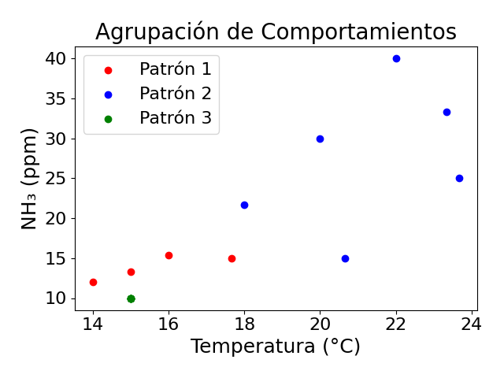
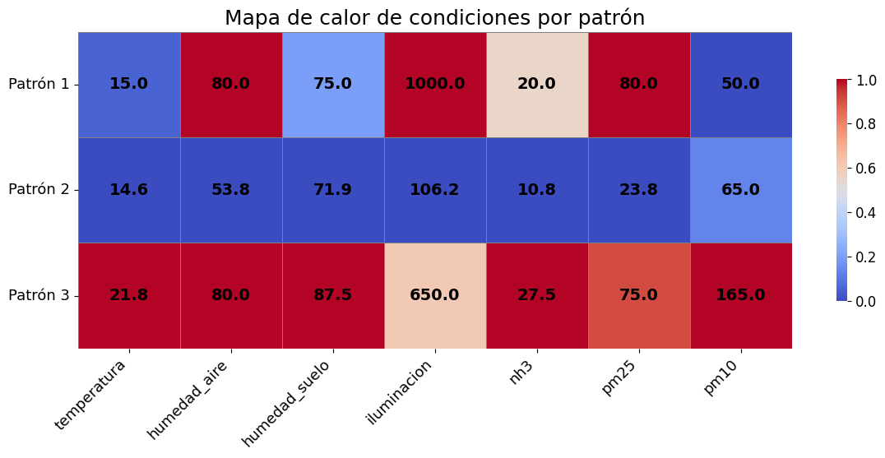
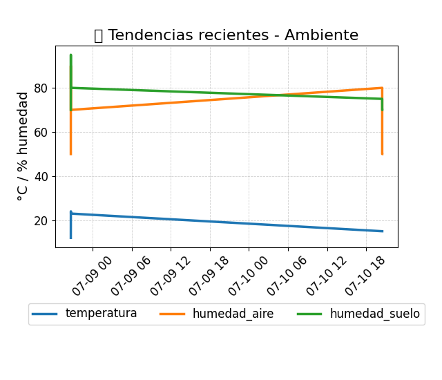
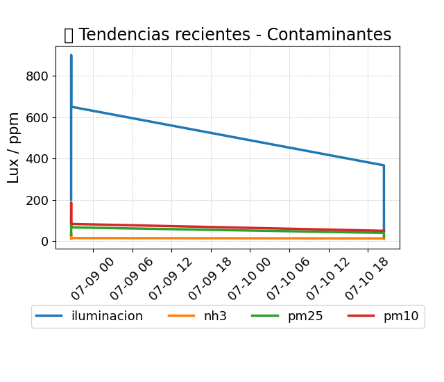

📊 Informe Automático IoT - Granjas Avícolas
📅 Fecha: 13 de julio de 2025 - 22:58 (GMT-4)
📌 Agrupación de comportamientos

- Patrón 1: ⚫ Contaminación crítica: niveles peligrosos de polvo. Ventilación urgente.
- Patrón 2: 🟣 Oscuridad prolongada: baja iluminación. Posible letargo o baja actividad.
- Patrón 3: 🟠 Polvo y NH₃ elevados: alerta respiratoria.
🗺 Mapa de calor de variables por patrón

📈 Tendencias recientes - Ambiente

📈 Tendencias recientes - Contaminantes
